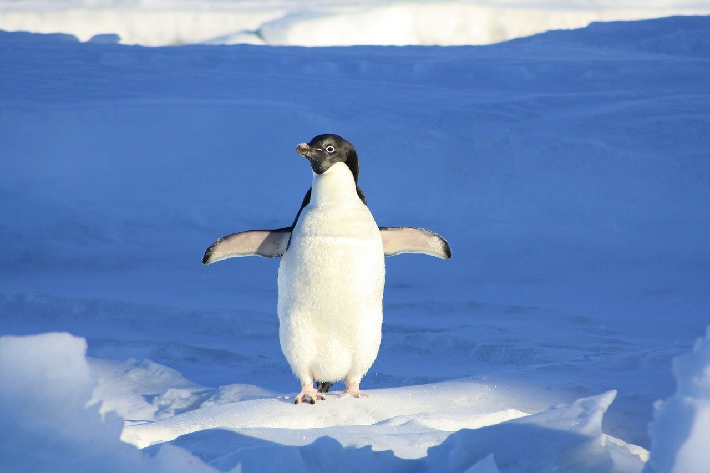
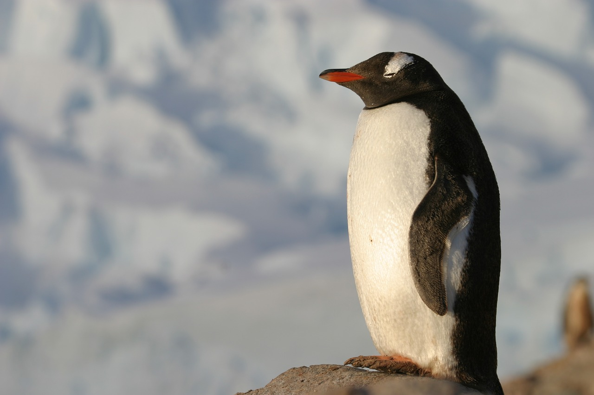
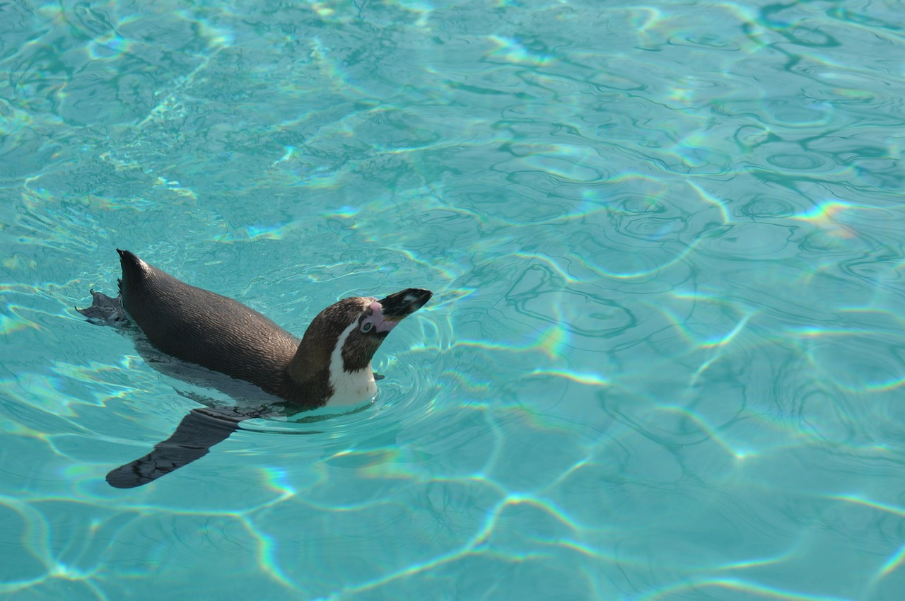
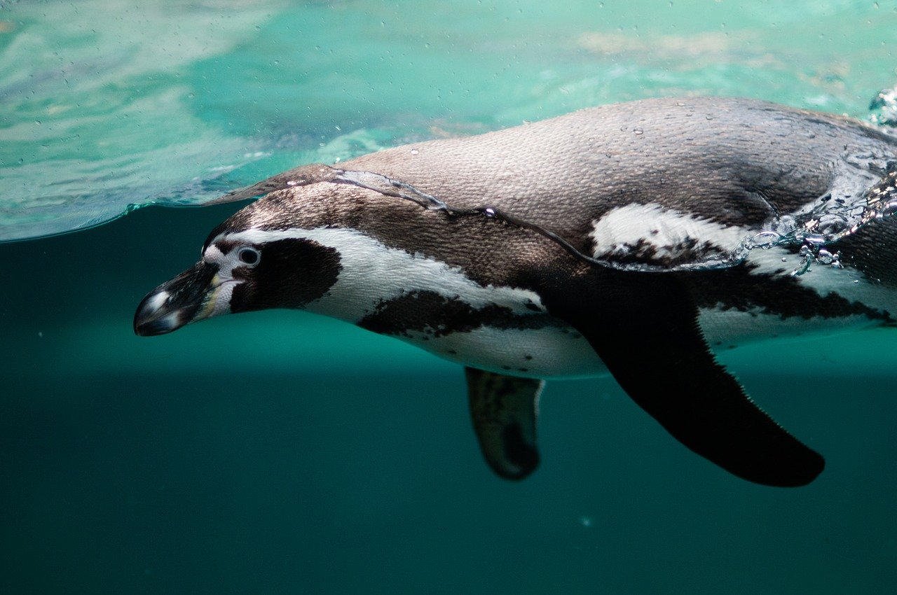
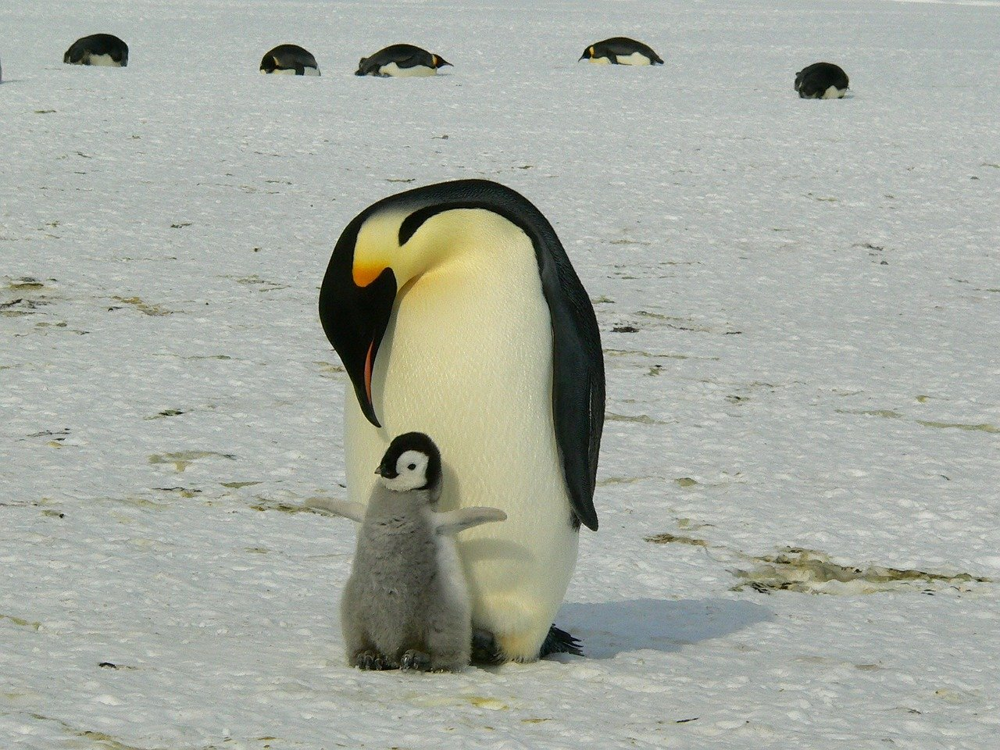
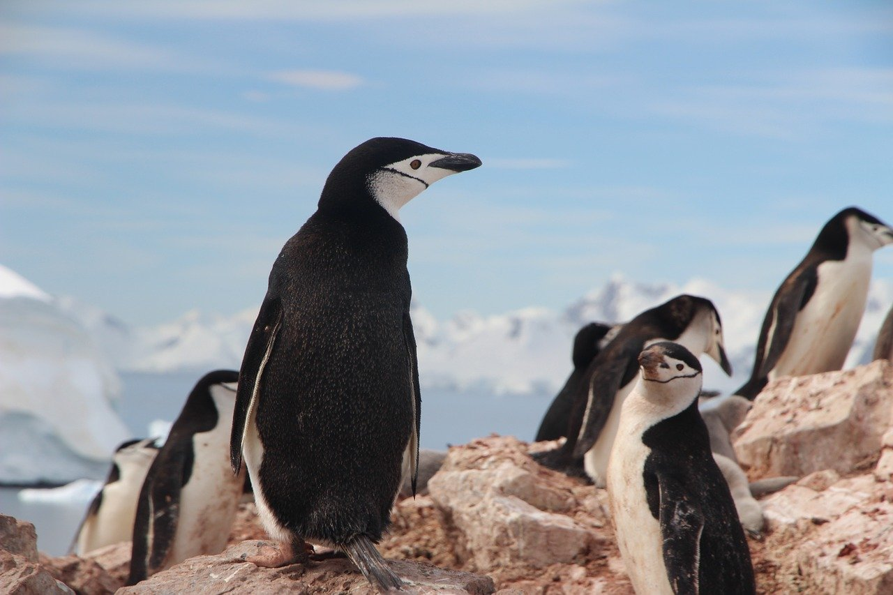

1.分類
学名︰Sphenisciformes Sharpe
鳥綱ペンギン目に属する種の総称である。ペンギン科のみが現生する。
主に南半球に生息する海鳥であり、飛ぶことができない。 漢字で書くと今では使われることは稀だが、「人鳥（じんちょう）」「企鵝（きが、企は爪先立つの意、鵝はガチョウ）｣という和名もある。
2.身体的特徴
 多くの鳥類は陸上では、胴体を前後に倒し首を起こす姿勢をとるが、ペンギン類は胴体を垂直に立てる。鳥類の多くが飛翔に使う翼は特殊化し、ひれ状の「フリッパー」と化していて飛翔能力を失い水中の遊泳にのみ使われる。首が短く、他の鳥類とは一線を画す独特の体型をしている。
世間一般では「脚が短い」と思われているが、実際には体内の皮下脂肪の内側で脚を屈折している。関節はこの状態のまま固定されているので、脚を伸ばすことはできない。体外から出ているのは足首から下の部分だけである。成鳥ではほとんど脂肪に隠されており表面上見えないが、生後まもなくの脂肪の少ないペンギンではその骨格がはっきりと見てとれる。
3.生態的特徴
 陸上ではフリッパーをばたつかせながら歩く姿がよく知られているが、氷上や砂浜などでは腹ばいになって滑る。これをトボガンという。
海中では翼を羽ばたかせて泳ぐ。ペンギン類で最も速いジェンツーペンギンの水中速度は最大36 km/hに達する。イルカのように海面でジャンプすることもあり、水中から陸上に戻るときにはいったん深く潜り、勢いを付けて飛びあがる。独特の体型は泳ぐことに特化しており、海中を自在に泳ぎ回る様はしばしば「水中を飛ぶ」と形容される。
4.食性／繁殖
食性
食性は肉食で、魚類・甲殻類・頭足類などを海中で捕食する。
繁殖
陸上で繁殖する。卵は1個〜3個を産み、オスとメスで抱卵をする。またコウテイペンギンのように、ある程度成長したヒナ同士で集まり「クレイシュ」を形成するものがある。また、羽毛が抜け替わる換羽期には海に入らず、絶食状態で陸上にとどまる種もいる。 ほとんどのペンギンは他の鳥類と同様に春から夏にかけて繁殖するが、最大種のコウテイペンギンは、－60℃に達する冬の南極大陸で繁殖する。そのため、世界で最も過酷な子育てをする鳥と言われる。
5.生息分布
南半球の広い緯度範囲に分布する。主に南極大陸で繁殖するのはコウテイペンギンとアデリーペンギンの2種のみである。ほかに、ジェンツーペンギン・マカロニペンギン・ヒゲペンギンの3種は、南極大陸の中でも比較的温暖な南極半島にも繁殖地があるが、主な繁殖地は南極周辺の島である。他の種類は南アメリカ・アフリカ南部・オーストラリア・ニュージーランド、あるいは南極周辺の島などに繁殖地がある。
※コウテイペンギン※アデリーペンギン
6.起源／歴史
ペンギンの西洋世界での認知は、温帯産ペンギンについては大航海時代に始まる。亜南極産は18世紀以降、南極産は19世紀以降のようである。日本では江戸時代後期に蘭書で知られたが、その認知は一部の蘭学者にとどまった。一般への認知は明治後期の日本人の南極探検にはじまる。
ゴミの投棄や船の事故による石油流出など、様々な海洋汚染がペンギンの脅威となっている。特に喜望峰周辺海域やパタゴニアなど、重要な航路に面した海域や油田地帯に接した海域にこの傾向が強い。 さらに近年の生息域の温暖化により、餌のオキアミの繁殖域となる海上の氷の激減、洪水による巣の浸水などで、生息数が減っている種もある。